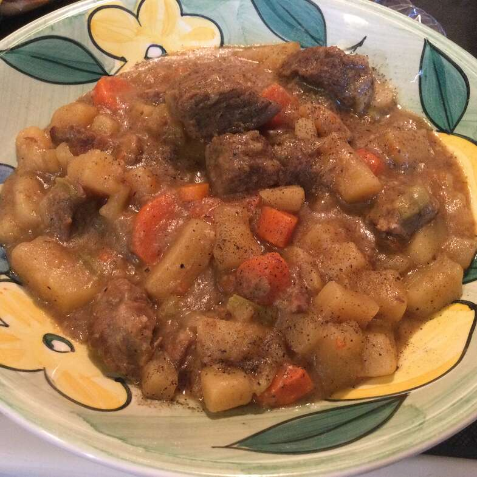

beef recipe

Description
Everyone’s favorite comforting beef stew made easily in the crockpot!
The meat is SO TENDER and the stew is rich, chunky and hearty!
best ever slow cooker beef stew cooked to perfection with dry red wine,
garlic, fresh herbs and tender potatoes and carrots. This easy beef stew
recipe is just like the classic one you grew up with and makes a delicious,
protein-packed dinner the whole family will love!The meat is SO TENDER and
the stew is rich, chunky and hearty!
Ingredients
- 2 tablespoons olive oil
- 2 pounds stew meat, cut into 1-inch cubes
- Kosher salt and freshly ground black pepper, to taste
- 1 pound baby red potatoes, quartered
- 4 carrots, cut diagonally into 1/2-inch-thick slices
- 1 onion, diced
- 3 cloves garlic, minced
- 3 cups beef broth
- 2 tablespoons tomato paste
- 1 tablespoon Worcestershire sauce
- 1 teaspoon dried thyme
- 1 teaspoon dried rosemary
- 1 teaspoon smoked paprika
- 1 teaspoon caraway seeds, optional
- 2 bay leaves
- 1/4 cup all-purpose flour
- 2 tablespoons chopped fresh parsley leaves
DIRECTIONS:
- Heat olive oil in a large skillet over medium heat.
- Season beef with salt and pepper, to taste. Add beef to the
skillet and cook until evenly browned, about 2-3 minutes.
- Place beef, potatoes, carrots, onion and garlic into a 6-qt slow
cooker. Stir in beef broth, tomato paste, Worcestershire, thyme,
rosemary, paprika, caraway seeds and bay leaves until well combined;
season with salt and pepper, to taste.
- Cover and cook on low heat for 7-8 hours or high heat for 3-4 hours.
- In a small bowl, whisk together flour and 1/2 cup stew broth.
Stir in flour mixture into the slow cooker. Cover and cook on high
heat for an additional 30 minutes, or until thickened.
- Serve immediately, garnished with parsley, if desired.